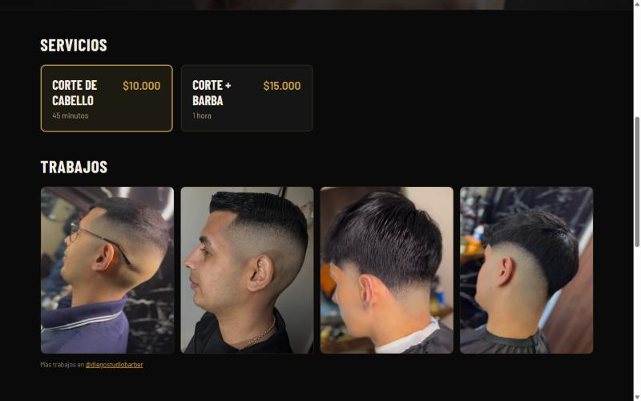
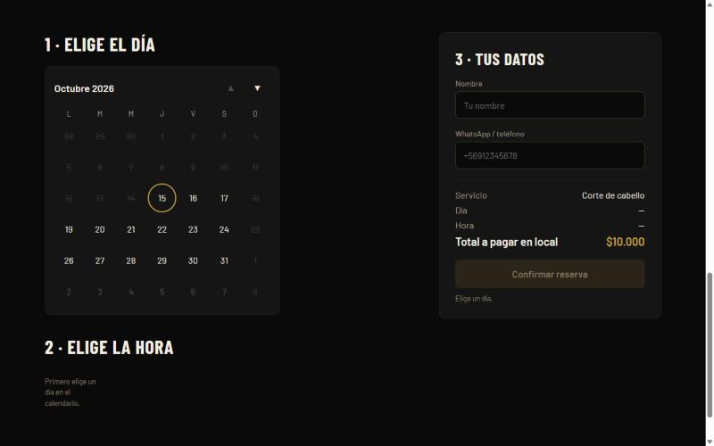
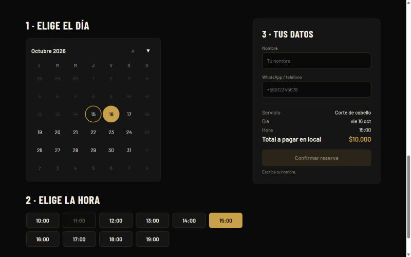
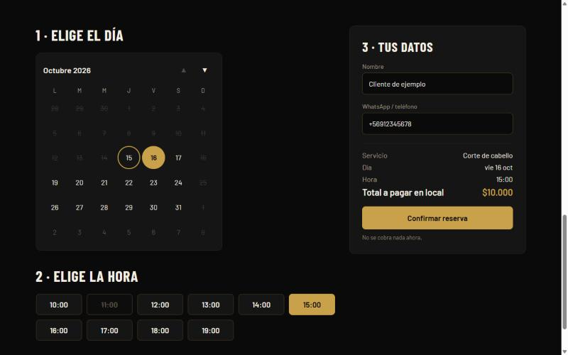
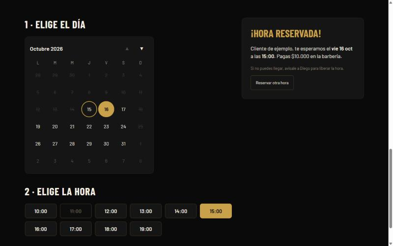
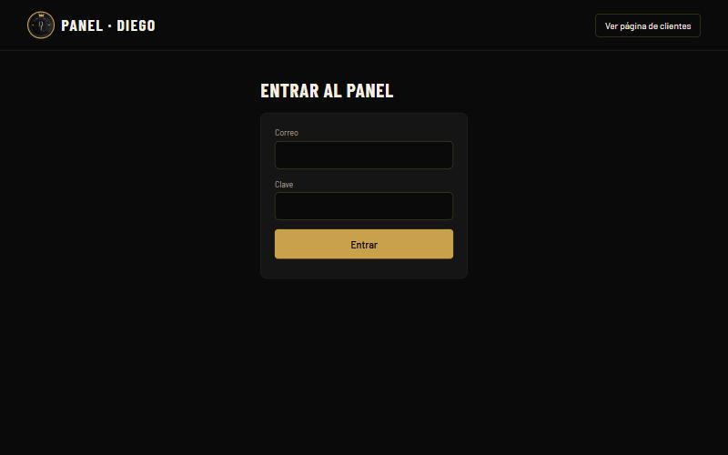
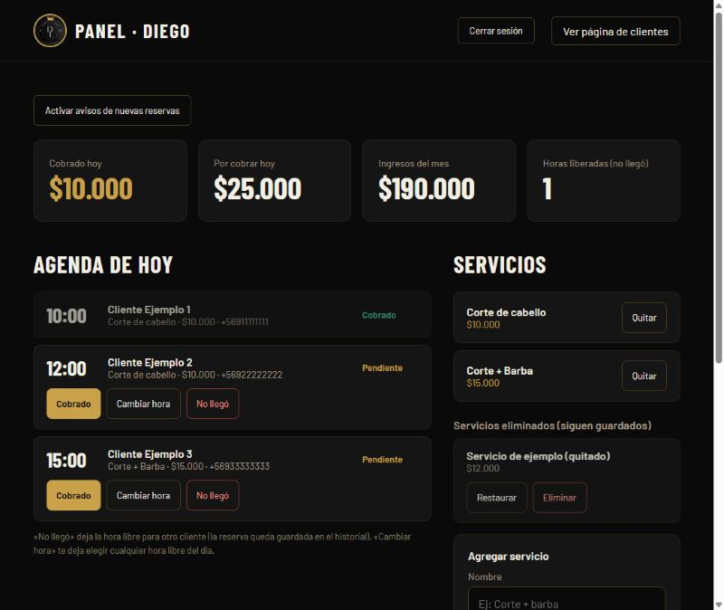
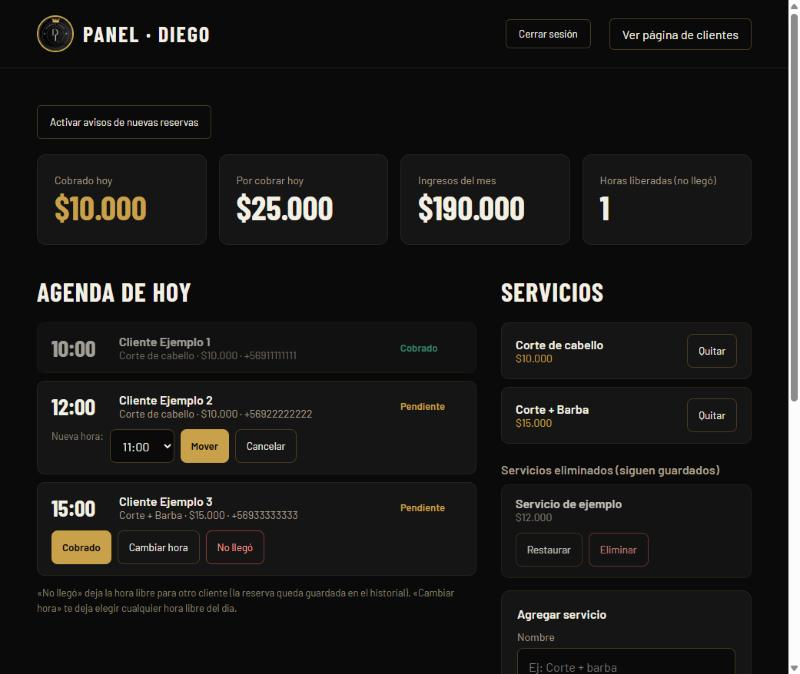
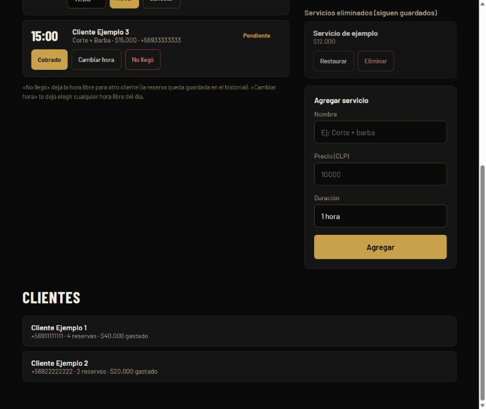

DiegoStudioBarber
Instructivo de uso
Página de reservas y panel de administración
Versión de prueba · Las imágenes del panel usan datos de ejemplo
Parte 1 · La página de tus clientes
Es lo que ve cada cliente cuando entra a la dirección de tu página. No necesita crear cuenta ni iniciar sesión. Reservar toma menos de un minuto y no se paga nada en la página: el cliente paga en la barbería después del corte.
1Portada
- Arriba está tu logo y el menú: Servicios, Trabajos y Reservar. Al tocar cada uno, la página baja a esa sección.
- Se muestran tu insignia «Más de 7 años de experiencia» y las etiquetas Fade, Barba y Perfilado.
- El botón dorado «Agendar mi hora» lleva directo a la reserva.
2Servicios y Trabajos

- Servicios: el cliente ve el nombre, el precio y la duración de cada servicio activo. Si hay más de uno, toca el que quiere.
- Trabajos: galería con fotos de tus cortes. Debajo hay un enlace a tu Instagram.
3Elegir el día

- Calendario mensual. Las flechas ▲ ▼ cambian de mes.
- El día de hoy tiene un círculo dorado. Los días tachados o apagados no se pueden elegir: ya pasaron o son domingo (día cerrado).
4Elegir la hora

- Al elegir un día aparecen las horas de ese día.
- Las horas tachadas ya están reservadas por otro cliente o ya pasaron. Una hora se puede reservar hasta 30 minutos después de empezar.
- La hora elegida se marca en dorado y aparece en el resumen de la derecha.
5Nombre y teléfono, y confirmar

- El cliente escribe su nombre y su celular en formato chileno (ej. +56912345678).
- El botón «Confirmar reserva» se enciende cuando están el día, la hora, el nombre y un celular válido.
- El resumen muestra el servicio, el día, la hora y el total a pagar en el local.
6Reserva confirmada

- Aparece «¡Hora reservada!» con el día, la hora y el valor a pagar.
- La hora queda tomada de inmediato para los demás clientes. Dos personas no pueden reservar la misma hora.
- Si el cliente no puede llegar, debe avisarte para liberar la hora.
Parte 2 · Tu panel de administración
Es solo para ti. Se entra desde el enlace pequeño «Acceso» que está al final de la página de clientes. Las imágenes de esta parte usan datos de ejemplo.
1Entrar al panel

- Escribe tu correo y tu clave y pulsa «Entrar». Sin eso, nadie ve tus datos.
- Cuando termines, usa «Cerrar sesión» (arriba a la derecha), sobre todo si usas un computador que no es tuyo.
2Resumen y agenda de hoy

Tarjetas de arriba:
- Cobrado hoy: lo que ya cobraste en el día.
- Por cobrar hoy: el valor de las reservas de hoy que aún no marcas como cobradas.
- Ingresos del mes: todo lo cobrado en el mes en curso.
- Horas liberadas: cuántas veces marcaste «No llegó».
Agenda de hoy: cada reserva muestra la hora, el nombre, el servicio, el precio y el teléfono. Las pendientes tienen tres botones:
| Botón | Qué hace |
|---|
| Cobrado | Marca que el cliente pagó. El monto se suma a tus ingresos y el cliente queda guardado en tu lista de clientes. |
| Cambiar hora | Te deja elegir otra hora libre del mismo día (ver el paso siguiente). |
| No llegó | Libera la hora para que otro cliente pueda tomarla. La reserva queda guardada en el historial. |
El botón «Activar avisos de nuevas reservas» (arriba a la izquierda) permite que el navegador te avise cuando alguien reserva. Ver la parte 3.
3Cambiar la hora de una reserva

- Al pulsar «Cambiar hora», aparece una lista con solo las horas libres de ese día.
- Elige la hora y pulsa «Mover». La hora anterior queda libre de inmediato. «Cancelar» deja todo como estaba.
- Si otro cliente toma esa hora justo antes, el panel te avisa y eliges otra.
4Servicios y clientes

- Agregar servicio: escribe el nombre, el precio y la duración, y pulsa «Agregar». Aparece enseguida en la página de tus clientes. Así puedes sumar, por ejemplo, «Corte + Barba».
- Quitar: oculta el servicio de la página de clientes, pero no lo borra. Queda en «Servicios eliminados».
- Restaurar: vuelve a poner un servicio quitado, por si lo sacaste por error.
- Eliminar: borra para siempre un servicio que ya estaba quitado. Pide confirmación y no se puede deshacer. Las reservas que ya se hicieron con ese servicio se mantienen.
- Clientes: lista de las personas que has cobrado, con su teléfono, cuántas veces han venido y cuánto han gastado.
Parte 3 · Cosas importantes
Avisos de nuevas reservas. Cuando el panel está abierto en el navegador y llega una reserva, aparece un cartel, suena un aviso y el título de la pestaña muestra el número de reservas nuevas. Para recibir también la notificación del navegador, pulsa «Activar avisos» y acepta el permiso. Si el panel está cerrado, no avisa.
Qué guarda la página. Las reservas, los clientes, los ingresos y los servicios quedan guardados en la base de datos de Firebase. Si se cierra el navegador o se apaga el computador, no se pierde nada.
Cuidado con tu clave. Cualquiera con tu correo y tu clave puede ver tus ingresos y los teléfonos de tus clientes. No la compartas, y cámbiala si alguien más la llega a conocer.
Qué puedes cambiar después
| Qué | Cómo |
|---|
| Servicios y precios | Desde el panel (agregar, quitar, restaurar, eliminar). |
| Horas de atención, días cerrados y hasta cuándo se puede reservar | Se ajusta en la configuración de la página (archivo js/data.js). Pídeselo a quien administra la página. |
| Fotos de «Trabajos» y de la portada | Se reemplazan o se agregan en la carpeta de imágenes de la página. |
| Colores y textos | Se cambian en los archivos de diseño de la página. |
Pendiente antes de publicar
- Dirección de la barbería.
- Definir el servicio de hosting y la dirección web (dominio).
- Servicios y precios reales.